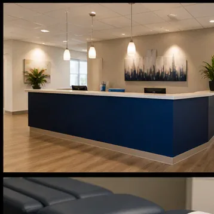

Advanced and personal care for motor vehicle accidents, work related injuries, and slip and falls.
01
Motor vehicle accidents
Advanced and personal care for collision injuries, assessed properly rather than assumed from the accident report.
02
Work related injuries
Work injuries diagnosed and documented for the claim, with the record built as treatment happens instead of afterwards.
03
Slip and fall
Fall injuries assessed across bones, joints and soft tissue, since these rarely turn out to involve only one of the three.
04
Chiropractic care
Chiropractic care and physical therapy delivered as one coordinated plan rather than two schedules running in parallel.
05
Physical therapy
Therapy built from an analysis of how your body actually moves now, which after an injury is rarely how it moved before.
06
Diagnostic evaluation
Physicians who diagnose before they treat, because treating the obvious symptom is how the real injury gets missed.
Section 02 / About us
About us
Our team of experienced physicians and support staff put your specific needs first. With years of experience, our team of physicians is capable of analyzing your body and creating a plan built for the injury you actually have. Accident cases are rarely simple, since the collision that injured a neck usually injured a shoulder and a low back at the same time, and a plan that treats only the loudest of the three leaves two behind.
PhysiciansExperienced team
Ogontz Ave7707
Auto, work, fallsThree case types
PersonalCare plans

Section 03 / Treatment
Chiropractic care and physical therapy
Advanced and personal care for treatment of motor vehicle accidents, work related injuries, and slip and falls, coordinated across both chiropractic and physical therapy. Running them together rather than in sequence is what keeps the recovery moving when one discipline alone would have stalled.